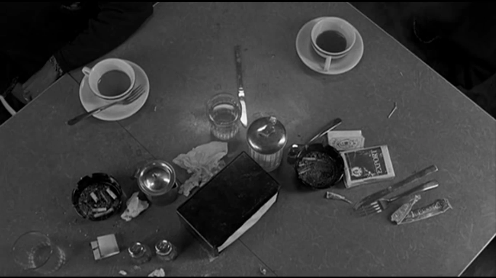

Coffee and Cigarettes es una película independiente de Estados Unidos que se estrenó en 2003, dirigida por Jim Jarmusch. Está formada por 11 historias cortas en la belleza del blanco y negro, unidas por un ángulo cenital de dos tazas de café y un par de cigarros.
Lo que me gusta de esta película es que le quita toda la pretensión a la filosofía del café, y en vez de hacer que una conversación hueca parezca profunda, hace lo contrario: una conversación de lo más cotidiana, con esos silencios incómodos que experimentan dos personas cuando se reúnen en sitios callados, que parecen no decir nada, pero si prestas atención, casi inconscientemente te encuentras repitiendo en voz baja la última frase.
¡Te contamos la historia!Año
2003
#coffe
Dijiste que lo ibas a dejar. En su lugar, gastas una fortuna para que las compañías de tabaco se sigan enriqueciendo. Y luego le dé cáncer. Y luego los malditos doctores y hospitales, ellos se harán ricos. Y también las funerarias. Todo porque quieres fumar como un maldito estúpido.
Coffee and Cigarettes es una película independiente de Estados Unidos que se estrenó en 2003, dirigida por Jim Jarmusch. Está formada por 11 historias cortas en la belleza del blanco y negro, unidas por un ángulo cenital de dos tazas de café y un par de cigarros.
Lo que me gusta de esta película es que le quita toda la pretensión a la filosofía del café, y en vez de hacer que una conversación hueca parezca profunda, hace lo contrario: una conversación de lo más cotidiana, con esos silencios incómodos que experimentan dos personas cuando se reúnen en sitios callados, que parecen no decir nada, pero si prestas atención, casi inconscientemente te encuentras repitiendo en voz baja la última frase.